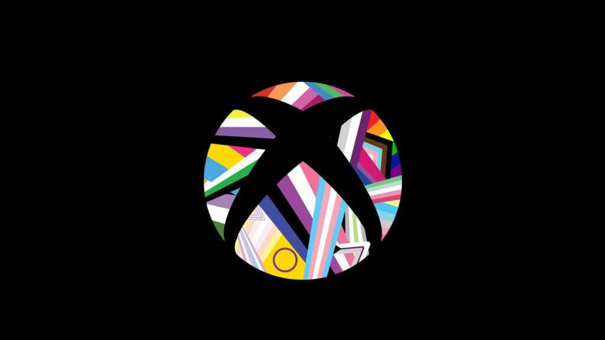
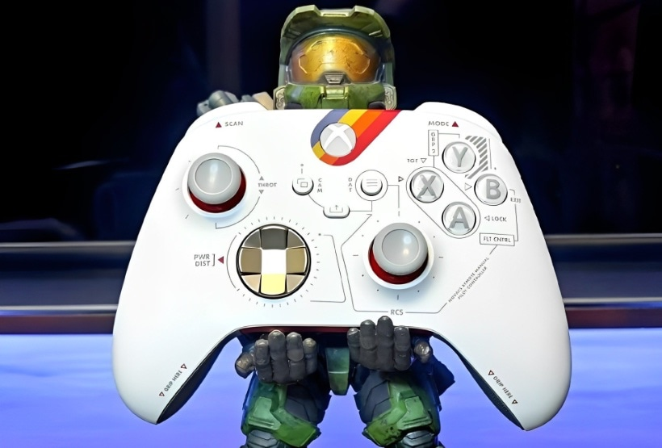

voltar para a pagina
anterior
Microsoft é multada em $20 milhões por coletar dados de crianças no xbox
A Microsoft pagará uma multa de US$ 20 milhões para resolver as acusações da Comissão Federal de Comércio (FTC), que acusa a gigante norte-americana de violar a Lei de Proteção à Privacidade Online das Crianças (COPPA) ao coletar informações pessoais de menores de 13 anos sem o consentimento de seus pais ou responsáveis.


O órgão regulador de mercado dos Estados Unidos afirma que a empresa coleta informações pessoais de crianças através do Xbox, que exige o registro de uma conta da Microsoft para que o usuário tenha acesso aos seus serviços, como o Xbox Live. O processo envolve o fornecimento de nome e sobrenome, endereços de e-mail e data de nascimento.
A lei norte-americana proíbe empresas de coletarem dados de menores de 13 anos sem o consentimento dos pais e de utilizarem as informações para fins comerciais, como marketing ou publicidade. Além disso, os dados armazenados devem ser protegidos de vazamentos, e as companhias não podem retê-los por mais tempo do que o necessário.
Segundo a FTC, a Microsoft manteve dados de menores durante o processo de criação da conta por vários anos entre 2015 e 2020, mesmo sem o consentimento dos pais ou responsáveis.
Um porta-voz da Microsoft declarou que a empresa irá trabalhar em um “método de validação de idade e identidade de próxima geração” para “oferecer experiências personalizadas, seguras e apropriadas para a idade”.
Xbox Abraça a diversidade e jogos LGBTQIA+
ganham espaço no universo gamer

Recentemente, a companhia manifestou seu apoio e comprometimento com a comunidade LGBTQIA+. Essa iniciativa será liderada pela Xbox Game Studios Publishing, a fim de que haja uma transformação na indústria de jogos, tornando-a ainda mais diversificada e inclusiva.
Por isso, a companhia está empenhada em promover essa união e se dar mais representatividade para a comunidade. Sendo assim, uma parceria com a GLAAD, organização que defende os direitos LGBTQIA+, a Xbox dará seus primeiros passos
Controle do Xbox com tema de starfield deve ser lançado domingo.

A Microsoft deve anunciar um controle e headset temáticos de Starfield durante o Xbox Games Showcase no próximo domingo. Os acessórios só devem ser disponibilizados para venda assim que o evento terminar, mas ilustrações do controle apareceram antes do anúncio oficial em algumas lojas ao redor do mundo.
O Xbox Games Showcase de 11 de junho começará às 14h no horário de Brasília e será imediatamente seguido por uma apresentação do Starfield Direct com foco exclusivamente no jogo da Bethesda. Muito provavelmente, o controle, bem como o fone de ouvido temático de Starfield, devem ser apresentados no Starfield Direct
As imagens vazadas indicam que o controle custará o preço padrão, US$ 79,99 nos EUA, e o fone de ouvido custará US$ 124,99.